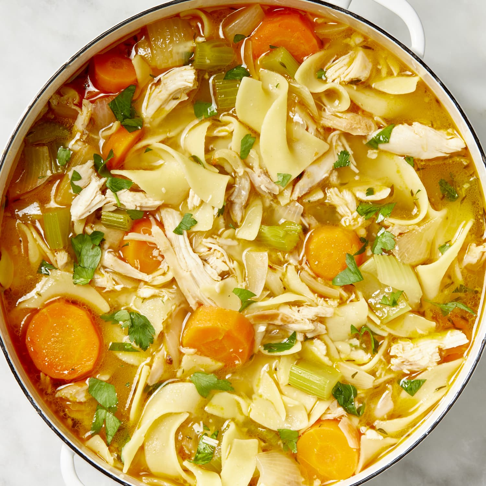

Home
Chicken Noodle Soup Recipe

Description
Chicken noodle soup is a classic, comforting dish made with tender chicken, hearty egg noodles, and a flavorful broth. It's typically prepared by simmering chicken with aromatic vegetables like onions, garlic, carrots, and celery, along with herbs such as thyme and bay leaves. The result is a warm, nourishing soup that's perfect for cold days or when you're feeling under the weather. Its simplicity and wholesome ingredients make it a beloved staple in many households.
Ingredients
- Chicken Breasts or Thighs
- Egg Noodles
- Olive Oil
- Onion
- Garlic
- Carrots
- Celery
- Chicken Broth
- Bay Leaves
- Fresh Thyme
- Salt
- Pepper
Steps
- Dice 1 onion, mince 2 garlic cloves, slice 3 carrots, and chop 3 celery stalks. Set aside.
- In a large pot, heat 2 tablespoons of olive oil over medium heat. Add 1 pound of chicken breasts or thighs and cook until browned on both sides. Remove the chicken and set aside.
- In the same pot, add the diced onion, minced garlic, sliced carrots, and chopped celery. Sauté until the vegetables are softened, about 5-7 minutes.
- Pour in 8 cups of chicken broth. Add 2 bay leaves, a few sprigs of fresh thyme, 1 teaspoon of salt, and 1/2 teaspoon of pepper. Bring to a boil.
- Return the chicken to the pot and reduce the heat to a simmer. Cook for about 20 minutes, or until the chicken is cooked through. Remove the chicken, shred it, and return it to the pot. Add 2 cups of egg noodles and cook until tender, about 8-10 minutes.
- Taste the soup and adjust the seasoning if needed. Add more salt and pepper to your preference.
- Ladle the hot chicken noodle soup into bowls and serve immediately. Enjoy!